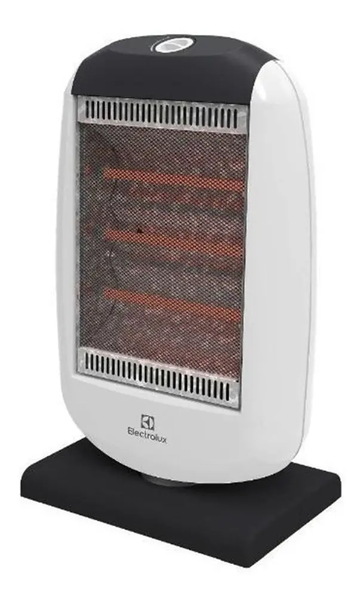

A Electrolux trabalha para reinventar a experiência humana. Por meio de seus produtos inovadores de alta qualidade e design, oferece uma solução para cada necessidade. Com o aquecedor HAL40GF, manter a temperatura da sua casa durante as estações frias será mais prático e simples do que antes. Adequado para sua casa A principal vantagem do aquecimento com um aquecedor de halogênio é que ele pode aumentar a temperatura ambiente sem umedecer o ar. Por sua vez, sendo portátil, não precisa de instalação, portanto, você pode transportá-lo facilmente para qualquer ambiente.